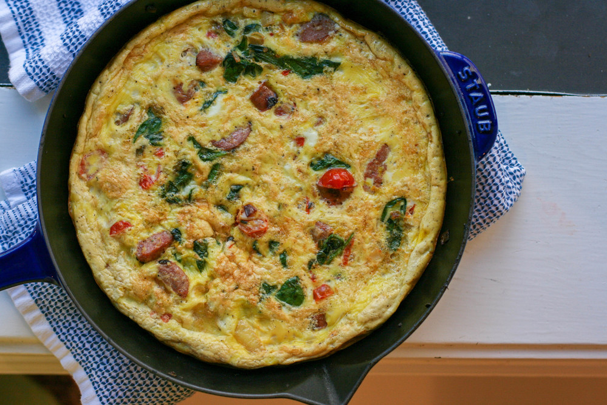

Inapoi
Reteta de omleta a la Bogdani
Instructiuni:
- Deschideti frigiderul.
- Faceti inventarul.
- Inchideti frigiderul.
- Lower your standards.
- Repeat until you're ready to make an omelette from scrap.
TIPS:Omleta se poate face din ORICE gasesti in frigider!(mai ales din oua)

Ultimele omlete gatite de catre maestrul bucatar:
- Omleta cu unt de arahide
- Omleta cu ciuperci(de padure) facute in sos de portocale
- Omleta cu bulion si branza
- Omleta cu bucatele de alune
- Omleta cu sos de ficatei
- Omleta cu vin sau bere(ce mai ramane dupa ce degusta bucatarul)
Chef Bogdani does not take responsability in case of tummy aches or frequent visits to the bathroom.
In case of spilling your guts out or bleeding from any parts of your body please go to the doctor.
TIPS:Nu va fie frica sa experimentati! ( I won't judge)